01
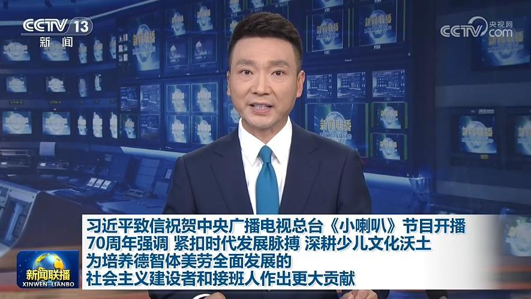
习近平致信祝贺中央广播电视总台《小喇叭》节目开播70周年强调 紧扣时代发展脉搏 深耕少儿文化沃土 为培养德智体美劳全面发展的社会主义建设者和接班人作出更大贡献
在中央广播电视总台《小喇叭》节目开播70周年之际，中共中央总书记、国家主席、中央军委主席习近平发来贺信表示祝贺。
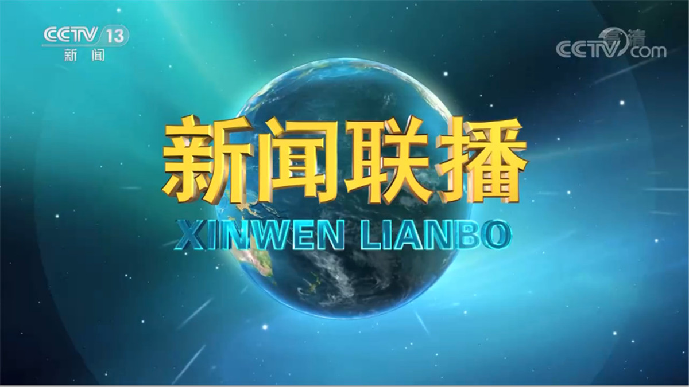

在中央广播电视总台《小喇叭》节目开播70周年之际，中共中央总书记、国家主席、中央军委主席习近平发来贺信表示祝贺。
本台今天（9月4日）播发央视快评《用心用情创作更多传播真善美、受到孩子们喜爱的优秀作品》。
9月4日，第八届中俄能源商务论坛在俄罗斯符拉迪沃斯托克举办。国家主席习近平向论坛致贺信。
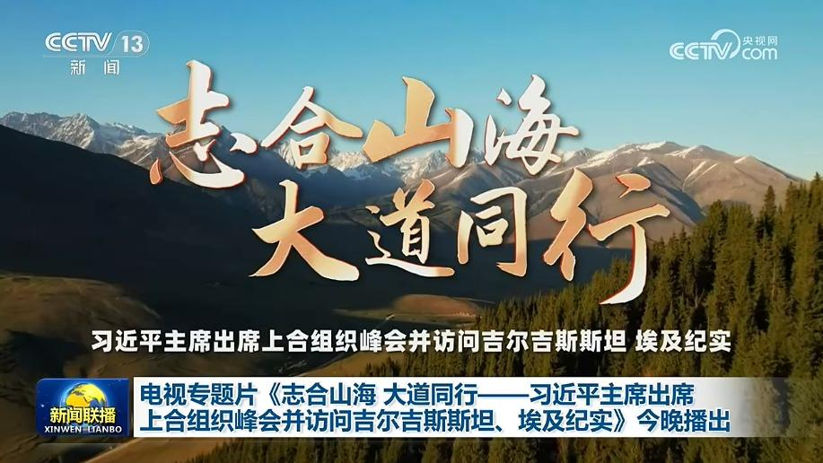
由中央广播电视总台制作的电视专题片《志合山海 大道同行——习近平主席出席上合组织峰会并访问吉尔吉斯斯坦、埃及纪实》将于今晚（9月4日）黄金时间在总台央视综合频道、新闻频道并机播出。
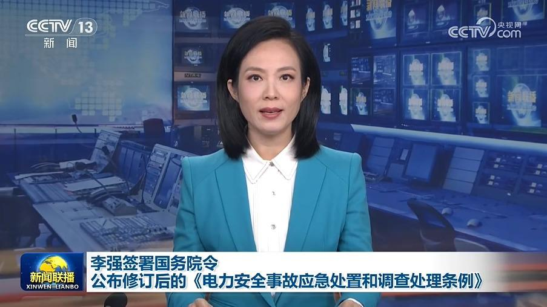
国务院总理李强日前签署国务院令，公布修订后的《电力安全事故应急处置和调查处理条例》（以下简称《条例》），自2027年1月1日起施行。《条例》修订的主要内容，一是明确电力企业、电力用户等应当服从统一调度，严格执行有关标准和技术规范，加强事故隐患排查。二是统筹考虑电网规模和结构变化等因素，对事故等级划分标准作了调整完善。……
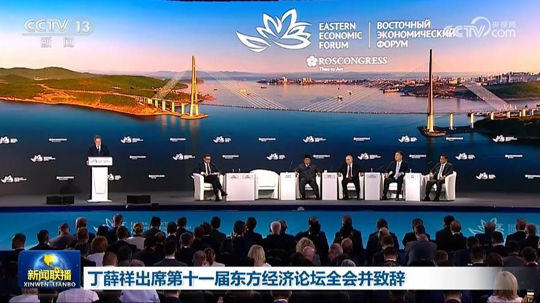
中共中央政治局常委、国务院副总理丁薛祥3日在俄罗斯符拉迪沃斯托克出席第十一届东方经济论坛全会并致辞。
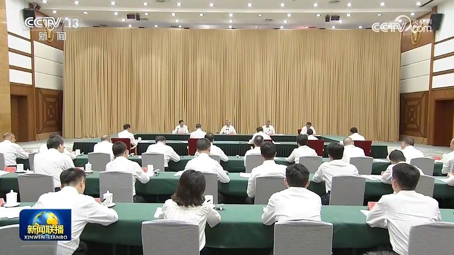
中共中央政治局常委、中央纪委书记李希1日至3日到贵州调研。他强调，纪检监察机关要坚持以习近平新时代中国特色社会主义思想为指导，深入学习贯彻习近平党建思想，深刻领悟“两个确立”的决定性意义、坚决做到“两个维护”，认真抓好中央纪委五次、六次全会精神贯彻落实，巩固拓展树立和践行正确政绩观学习教育成果，扎实开展“纪检监察工作规范化法治化正规化建设年”行动，以更高标准、更实举措推动纪检监察工作高质量发展。
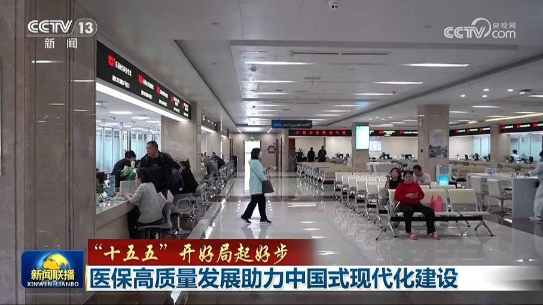
今天（9月4日）上午，国务院新闻办公室举行“开局起步‘十五五’”系列主题新闻发布会，介绍推进医保高质量发展，更好服务中国式现代化建设有关情况。
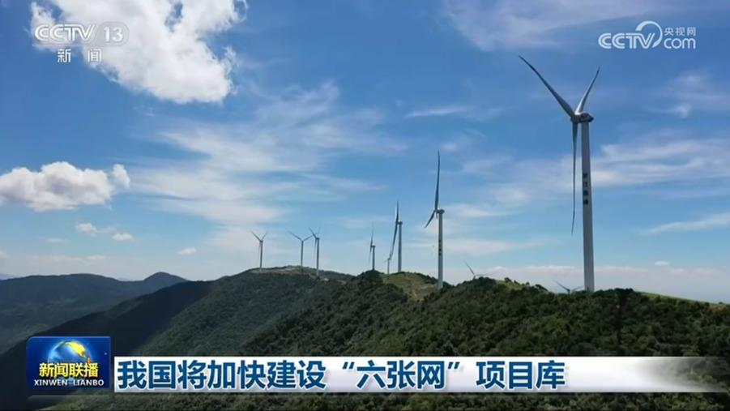
记者从国家发展改革委了解到，为确保算力网、新型电网等“六张网”建设高效有序推进，我国将加快建设“六张网”项目库，加快梳理一批具有吸引力的工程项目向社会公开推介，鼓励多元主体参与，更好发挥政府投资的撬动作用，同步完善价费形成等机制和配套支持政策，推动商业模式创新，形成共同推进“六张网”建设的合力。
今年以来，我国持续扩大进口，中国超大规模市场释放出的需求正在成为全球共享发展新机遇。
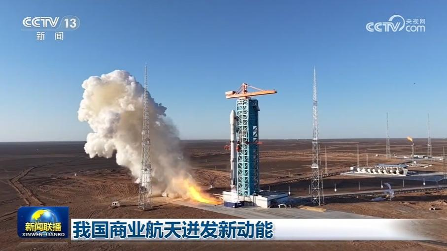
今年以来，一系列政策举措持续发力，中国商业航天新赛道更加活跃，充满活力。不久前，朱雀三号成功实现我国首次入轨级运载火箭陆地可控回收。朱雀三号的成功是中国商业航天体系的一次集中亮相。成功的背后，是一张覆盖全国的近700家企业的协作网络，发动机主体产自浙江湖州，不锈钢箭体产自浙江嘉兴，着陆腿产自四川广汉。
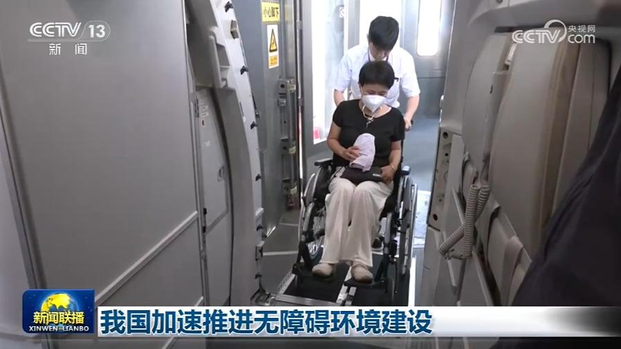
今年以来，各地各部门多措并举，推进我国无障碍环境建设从“点位覆盖”向“全域友好”转变。
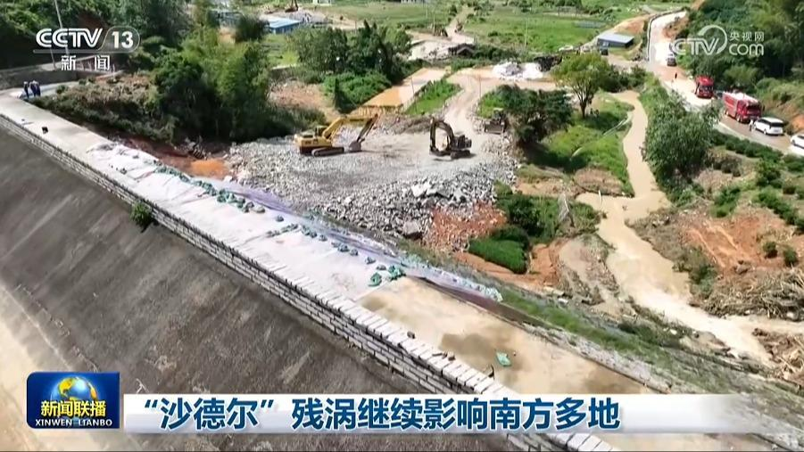
今天（9月4日），受“沙德尔”残涡影响，南方多地仍出现强降雨，各地各部门积极应对。
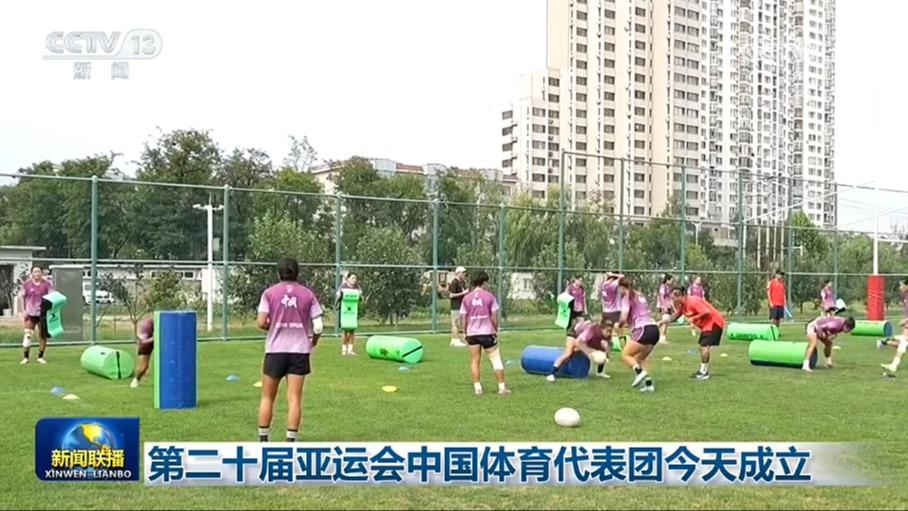
第二十届亚运会中国体育代表团今天（9月4日）在北京正式成立，代表团由1274人组成，其中运动员815人，将参加38个大项、369个小项的比赛。代表团运动员平均年龄24岁，其中“05后”运动员占总人数的27%，有548名运动员是首次参加亚运会。游泳、艺术体操、射击等13个项目的36名奥运会冠军将参加此次亚运会。第二十届亚运会将于9月19日至10月4日在日本举行。
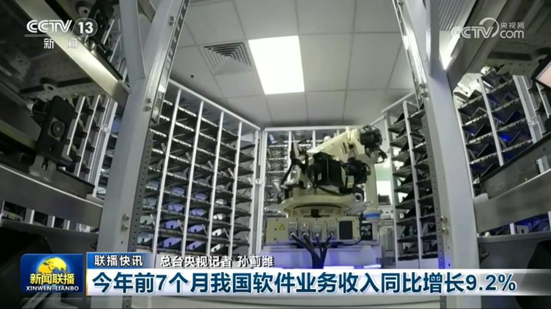
今年前7个月我国软件业务收入同比增长9.2%
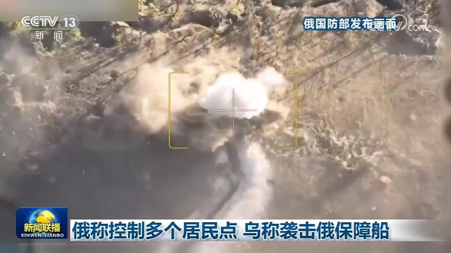
俄罗斯国防部3日称，过去一天，俄军在顿涅茨克和哈尔科夫控制了4个居民点，并对乌克兰军用物流中心、船只、港口设施等目标实施集群打击。
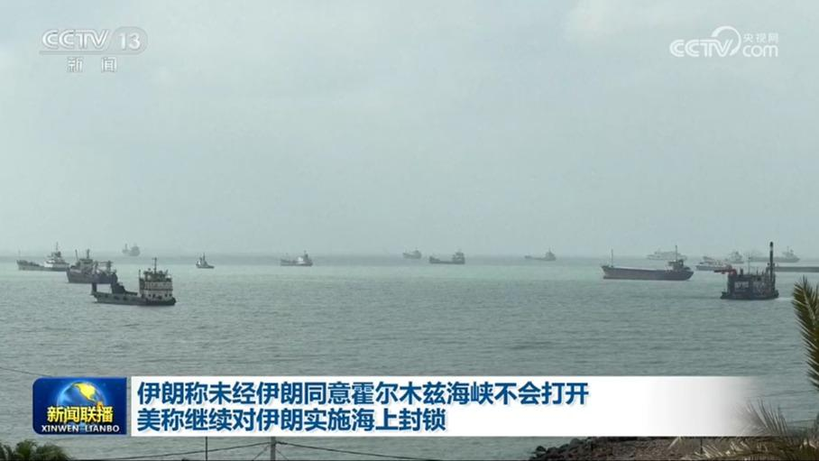
据伊朗媒体3日报道，伊朗伊斯兰议会国家安全和外交政策委员会主席易卜拉欣·阿齐兹当天称，未经伊朗同意，霍尔木兹海峡不会开放，伊朗已经向美国展示了将威胁转化为可信威慑的能力。
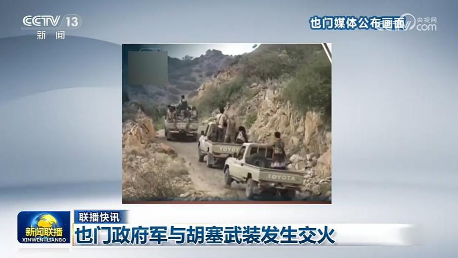
也门政府军与胡塞武装发生交火